论文精读 GPT、GPT-2、GPT-3
5.GPT，GPT-2，GPT-3
大力出奇迹模型
- 李沐讲解：GPT，GPT-2，GPT-3 论文精读
最近以GPT系列为代表的大语言模型LLM掀起了一阵热潮，许多人惊叹LLM的震撼能力，因此紧跟时代潮流，学习GPT系列论文，加深自己对LLM的理解。总的来说，GPT整体的模型架构都是以Transformer的解码器为模块进行堆叠而成。主要的创新点集中在模型训练策略，还有就是讲究一个大力出奇迹。
0.论文时间轴
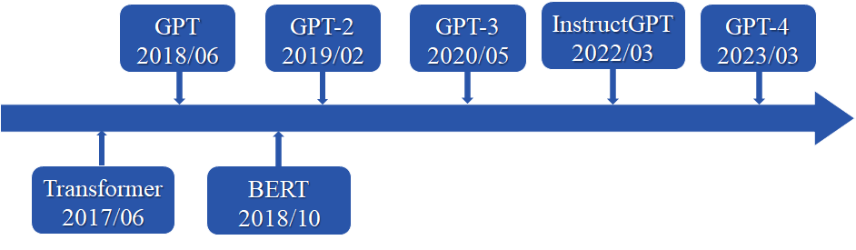
GPT：Transformer解码器，在没有标号的大量的文本数据上，训练一个语言模型，来获得预训练模型，后续在子任务上做微调，得到每一个任务所用的分类器。
BERT：Transformer编码器，收集了一个更大的数据集，用来做预训练，效果比GPT好。BERT有两个模型，BERT-base模型与GPT模型参数相差不大，BERT-Large比BERT-base模型大。
GPT-2：原作者吸取教训，收集更大的数据集，训练了一个更大的模型，GPT-2的模型比BERT-large要大。继续使用Transformer的解码器，发现非常适合做Zero Shot，步子跨的太大，效果上不是那么好。
GPT-3：GPT-3对GPT-2的改进就是数据和模型都大了100倍。大力出奇迹，效果非常惊艳。几乎没有什么团队去复现结果。
Transformer和BERT来自Google，想要解决的问题都比较小；Transformer就想解决机器翻译这样的问题，从一个序列到另外一个序列；BERT想把计算机视觉中成熟的那一套预训练模型应用到NLP中。在同样大小的模型上，BERT的效果是要好于GPT的。所以，后续的工作，非常愿意使用BERT，而不是GPT。
1.GPT
论文标题：“Improving Language Understanding by Generative Pre-Training”，2018.6.
论文链接：language_understanding_paper.pdf
1.1 摘要
在自然语言处理领域，有很多各式各样的的任务，如问答，文本分类等。然而，现有的无标签文本非常多，而有标签的文本很少，这使得在这些有标签文本训练一个好的分辨模型很难，因为数据集太少。因此GPT第一个版本主要就是为了解决这个问题而提出的一套针对语言模型的预训练方法，使得大量的无标签数据能够被使用，并且对预训练好的模型加以微调使其适用于许多的下游任务。
在微调时，构造与子任务相关的输入，从而之只需要很少改变模型架构。
结果：12个任务中，有9个超过之前最好的成绩
1.2 引言
如何利用无标签的数据，当时最成功的还是词嵌入模型（Word Embeddings）。
使用无标记数据时，需要的两个困难：
- 损失函数设计困难：不清楚什么样的优化目标对文本有效
- 特征迁移困难：怎么样把学习到的问题表示，传递到下游的子任务上；没有一种表示，能够迁移到所有子任务上
提出一个半监督的方法（预训练+微调）：在没有标号的数据上，训练一个比较大的语言模型，然后再再子任务上微调。
- 半监督学习：有一些标记的数据，但还有大量没有标记的相似数据，怎么把这些没有标记的数据用过来。
- 后续的BERT、GPT的方法，预训练 + 微调，不再叫做半监督学习，而叫做自监督学习。
GPT架构使用Transformer块，相比于RNN，在做迁移学习时，Transformer块学到的特征更加稳健。作者猜测Transformer里面有更结构化的记忆，使得能够处理更长的问题信息，从而能偶抽取出句子层面、段落层面的语义信息。在迁移时，使用任务相关的输入表示。
1.3 Framework
两个阶段：无监督预训练+有监督微调
（1）无监督预训练：预训练
给定一个未监督的语料信息 $\mathcal{U}=\left{u{1}, \ldots, u{n}\right}$，使用标准的语言模型，使下面这个似然函数最大化：
其中，k为上下文窗口大小，$\Theta$ 为模型参数。
简单来说就是根据上文的k个单词，预测下一个最大概率的单词$u_i$。
使用多层Transformer decoder块作为语言模型（标准的语言模型，根据已有的词进行下一个词的预测，不能使它看到所有的词，所以只有解码器）。
模型输入输出如下所示：
其中，$U=\left(u{-k}, \ldots, u{-1}\right)$为上下文tokens向量，$n$为transformer的层数，$W_e$为词嵌入矩阵维度，$W_p$为位置编码矩阵。
GPT和BERT区别：
- BERT：用的不是标准的语言模型，使用带掩码的语言模型，就是完形填空，预测时，既能看到之前的词，也能看到之后的词，对应使用Transformer的编码器。
- 区别：使用解码器和编码器不是主要的区别；主要时目标函数的选取不同，GPT选择更难的，给前面一句话，预测后面这个词，预测未来比完形填空更难。
（2）有监督微调
在得到预训练模型后，就使用有标签的数据进行微调。具体来说每一次我给你一个长为m的一个词的序列，然后告诉你这个序列它对应的标号是y，也就是每次给定一个序列预测他这个y。微调优化目标是最小化分类目标函数。
预测y，将 $x^{1}, \ldots, x^{m}$序列放入之前训练好的GPT模型中，获得Transformer块的最后一层输出 $h_l^m$，然后乘以输出层 $W_y$，做softmax就得到y的概率
做目标函数最大化：
然后总的损失除了考虑微调损失，还考虑了预训练部分的损失，并用λ加权。
NLP领域四大常见的应用：
- 分类：给定一段话或文本，判断所属标号；如用户的评价是正面还是负面的。一段文本，在前面加入开始词元
[Start]，在后面加入抽取词元[Extract]，做成一个序列，放入Transformer解码器中，模型对最后一个词抽取的特征[Extract]放入线性层进行分类。 - 蕴含：给一段话，再给一个假设，判断前面一段话是否蕴含提出的假设。如文本：a给b送一朵玫瑰；假设：a喜欢b。判断前面文本是否支持假设。即两端文本做三分类问题，支持，不支持，既不支持也不反对。将两端问题串成一个序列，使用
开始符，分隔符，抽取符。 - 相似：判断两段文字是不是相似。如一个搜索词与文档是不是相似，或两个文档相似去重。相似是对称的，a和b相似，则b和a也相似。所以，做了两个序列，两个序列的文字顺序不同，再使用
开始符，分隔符，抽取符。得到两段输出后，经过Transformer，在做加号，最后经过线性层输出，得到是相似还是不是相似的二分类问题。 - 多选题：问一个问题，给几个答案，选择最可能的几个答案。如果有n个答案，构造n个序列，前面是问题，每一个答案作为第二个序列；每个序列进入Transformer块，最后经过线性层，输出答案的置信度；最后做一个softmax。
复用预训练的Transformer的结构，加一个线性层，不同的任务需要不同的输入。
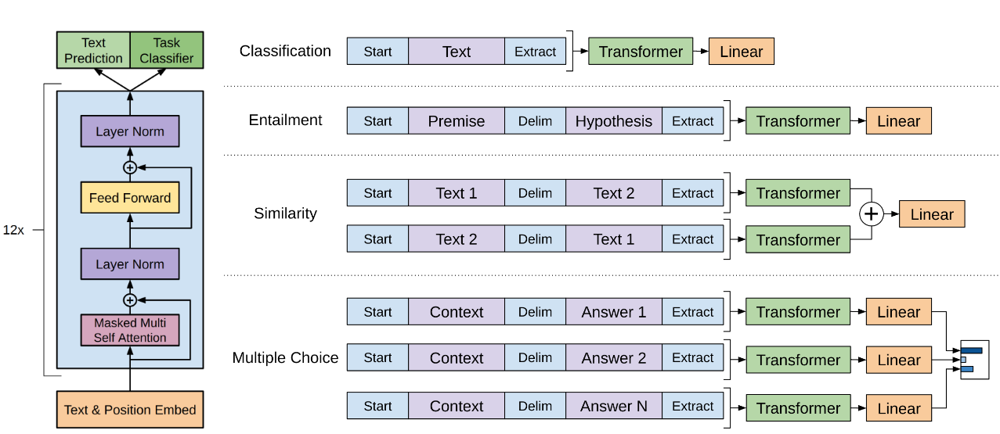
1.4 实验
实验主要关注两点。
- 第一点是GPT在一个叫做BooksCorpus 的一个数据集上训练出来的，这个地方有7,000篇没有被发表的书。
- 第二个是GPT整体模型，用了12层的一个Transformer 的解码器，每一层的维度是768。
2.GPT-2
论文标题：Language Models are Unsupervised Multitask Learners，2019
论文链接：Language Models are Unsupervised Multitask Learners
2.1 摘要
自从GPT提出后，Google紧随其后提出了BERT预训练模型，采用更大的模型和更大的数据，在各方面效果都要优于GPT。作为竞争对手，GPT当然是要反击的，那怎么做呢？如果单纯加大模型于增加数据量，或许能击败BERT，但是却少了些新意，因此GPT2从另外一个角度，除了加大模型和数据量，还引入了zero-shot设定，就是在做下游任务是，不需要下游任务的任何标签信息，也不需要重新训练一个模型，即在更难的一个设定上体现他的一个新意度。
- 构造 WebText 大数据集：百万级别文本
- GPT-2：15亿参数，BERT-large参数3.4亿
- zero-shot设置
2.2 引言
现在主流的机器学习系统训练方式为：一个任务收集一个数据集，然后再上面做模型训练和预测，因现在模型泛化性能不是很好。
多任务学习：训练一个模型时，同时看多个数据集，通过多个损失函数，来达到一个模型能够在多个任务上都能用。但是NLP中使用的不多，主要使用的还是预训练+微调方式。但还是有两个问题：第一个是对每一个下游任务，需要重新训练模型；二是需要收集有标号的数据才行。这样导致，拓展到新的任务上，还是有成本的。
GPT-2还是在做语言模型，在到下游任务时，会使用zero-shot的设定（不需要下游任务的标注信息，不引入模型没有见过的特殊符号），这样训练一个模型，任何地方都可以用。
2.3 模型
（1）GPT-1和GPT-2区别
GPT-1时，根据不同的下游任务，会调整输入信息，会加入开始符、分隔符、结束符等信息，然后在使用有标记的数据进行微调，让模型去认识这些符号。
而GPT-2做下游任务时，不再加入开始符、分隔符、结束符等模型未见过的信息，而是采用zero-shot的设定。
GPT-2下游任务模型的输入，和预训练时，模型看到的输入是一样的。
例如：
- 英语翻译为法语：
translate to french, english text, french text - 做阅读理解：
answer the question, document, question, answer
这个提示符后面叫做Prompt。
（2）训练数据
BERT训练数据：Wikipedia
Common Crawl项目：一个公开的爬虫项目，不断抓取网页放在AWS上，是能下载到最大的文本数据集，TB级别的数据量。但作者认为这个不好用，因为信噪比比较低，抓取的网页，较多是没有信息的网页。
GPT-2使用Reddit里面的数据，选取最近3词评论以上的数据，得到4500万分链接，将数据抽取出来，得到一个数据集，约800万文本，40GB的文字。
（3）GPT-2模型大小
GPT2也是基于Transformer解码器的架构，作者设计了4种大小的模型，参数结构如下：
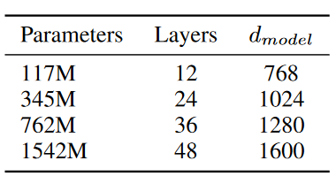
可以看到，最大模型的参数量已经去到了15个亿。还有一个细节就是GPT2调整了transformer解码器结构：将layer normalization放到每个sub-block之前，并在最后一个Self-attention后再增加一个layer normalization。
2.4 训练范式
采用预训练+zero-shot的训练范式。为实现zero-shot，GPT2在做下游任务时，输入就不能像GPT那样在构造输入时加入开始、中间和结束的特殊字符，因为这些特殊字符是模型在预训练时没有见过的。正确的输入应该和预训练模型看到的文本一样，更像一个自然语言。比如在做机器翻译时，直接可以输入“请将下面一段英文翻译成法语，英文文本”，由于在训练时可能已经存在很多这样的翻译文本样例，因此模型就可以实现输出一段法语。
2.5 实验
数据集：Webtext，包含4500w个链接的文本信息，总计800w的文本和40GB的文字。
训练：GPT-2去掉了fine-tuning训练，只保留无监督的预训练阶段，不再针对不同任务分别进行微调建模，而是不定义这个模型应该做什么任务，模型会自动识别出来需要做什么任务。
3.GPT-3
论文题目：Language Models are Few-Shot Learners，2020
论文链接：https://arxiv.org/pdf/2005.14165.pdf
3.1 摘要
GPT-3：自回归语言模型，有1750亿个可学习参数，比之前非稀疏模型在可学习参数上要大10倍。
GPT-3作用到子任务上，不做任何的梯度更新或是微调；
GPT-3可以生成一些人类难以区分的文章。
3.2引言
GPT2实验采用了zero-shot设定，在新意度上很高，但是有效性却比较低。而GPT3则是尝试解决GPT2的有效性，因此回到了GPT提到的Few-shot设置，即模型在做下游任务时，可以看到一些任务的样例，而不是像GPT2那样啥样例都不给。此外，GPT3还是只采用无监督预训练方式，那么传统的二阶段训练方式（预训练+微调）有什么问题？二阶段训练方式在预训练好一个模型后，还需要一个与任务相关的数据集，以及跟任务相关的微调方式。去除这种方式是可取的，有以下几个原因：
- 微调需要一个较大的有标签数据，对于一些如问答型任务，做标签是很困难的；
- 当一个样本没有出现在数据分布里是，微调模型的泛化能力不一定好，即尽管微调效果好，也不一定说明预训练的模型泛化能力好，因为极有可能微调是过拟合了预训练的训练数据，或者说预训练训练数据和下游任务数据有一定重合性，所以效果会好一点；
- 以人类角度来阐述为什么不用微调，就是说人类做任务不需要一个很大的数据集进行微调，比如一个人有一定的语言功底，让你去做一个别的事情，可能就是告诉你怎么做并提供几个样例就可以了，GPT3就是采用一样的思想。
总的来说，GPT3就是一个参数特别大，效果也很好的一个模型。
多任务预训练（上下文训练）
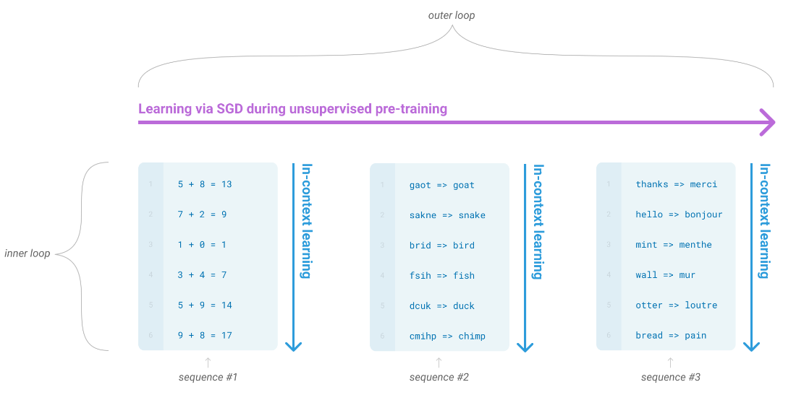
模型评估方式（3种）：
- few-shot learning：语境学习允许尽可能多的示例活动将适合模型的上下文窗口(通常10 - 100)
- one-shot learning：只提供一个示例，如英语翻译德语时，只提供第一个词怎么翻译，后续让模型自己翻译
- zero-shot：一个示例样本都没有
在三个设定下，模型的学习区别，x轴为语言模型的大小，其中虚线是每个子任务，做平均变成了实线。
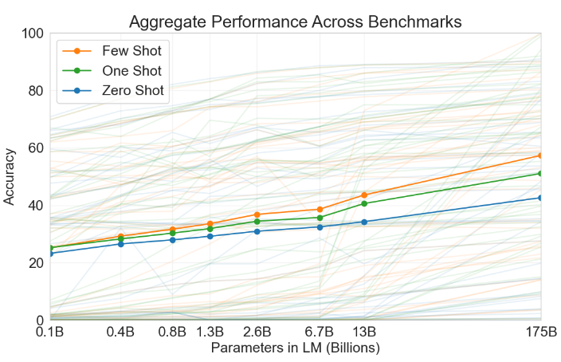
3.3 模型
（1）训练方式
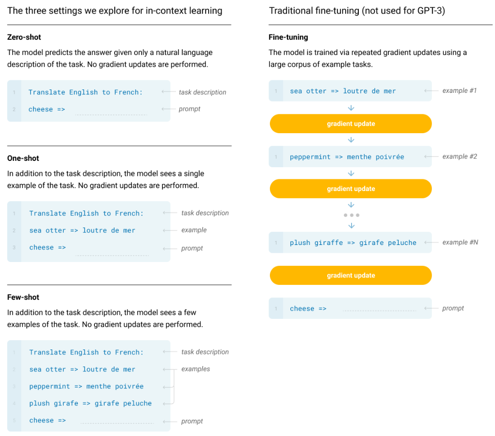
- Fine-tuning：训练完成预训练模型后，在每一个子任务上提供训练样本；微调对数据量的要求少于从0开始训练；
- Zero-shot：任务描述和prompt之间没有任何样本
- One-shot：任务描述和prompt之前，插入一个样本进来。样本只做预测，不做训练，模型在前向推理时，使用注意力机制，处理比较长的信息，从中间抽取出有用的信息。
- Few-shot：任务描述和prompt之前，插入多个样本进来。多个不一定有用，可能模型不能处理很长的数据。
几种训练方式简单概括如下：
- fine-tuning：预训练 + 微调计算loss更新梯度，然后预测。会更新模型参数
- zero-shot：预训练 + task description + prompt，直接预测。不更新模型参数
- one-shot：预训练 + task description + example + prompt，预测。不更新模型参数
- few-shot：预训练 + task description + examples + prompt，预测。不更新模型参数
（2）模型架构
GPT-3的模型和GPT-2的模型是一样的，稍微有点改动，把transformer换成了Sparse Transformer中的结构，并设计8个不同大小的模型。
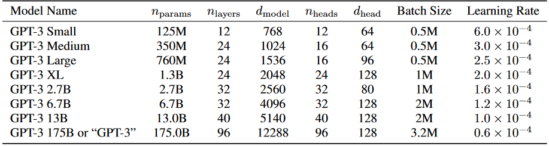
- 整体：GPT3模型偏扁
- Batch Size：使用相对比较大的批量大小，计算性能更好，每台机器的并行度更高，通讯量变低，降低批量里的噪音分布式比较好，小的模型批量大小更容易过拟合—些。
- 过拟合：模型越来越大的时候过拟合没有那么的严重，搜索范围更广，可能存在一个比较简单的模型架构，SDG可以帮助找到那个模型，使泛化精度更好一些。
- 学习率模型批量大小增大学习率下降。
Sparse Transformer
- Self-Attention：每个 token 之间两两计算 attention，复杂度$ O(n²) $
- Sparse Attention：每个 token 只与其他 token 的一个子集计算 attention，复杂度 $O(n∗logn)$
- sparseattention 除了相对距离不超过k以及相对距离为$k，2k，3k，…$ 的 token，其他所有token的注意力都设为0：
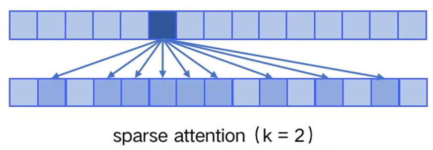
（3）训练数据
训练数据基于Common Crawl，做了三个步骤，是数据变得更干净：
- 过滤数据。GPT-2中使用的数据集为Raddit，质量较高。训练一个二分类网络，Raddit中数据为正例，Common Crawl部分数据为负例。使用这个二分类网络，对所有的Common Crawl中的数据进行分类，分类为正例留下，负例剔除。
- 数据去重。LSH算法去重：很快的判断一个集合（一篇文章的单词）与另一个很大集合之间的相似度。
- 增加高质量数据：增加一些已知的高质量数据集。
最后，得到一个很大的一个数据集。
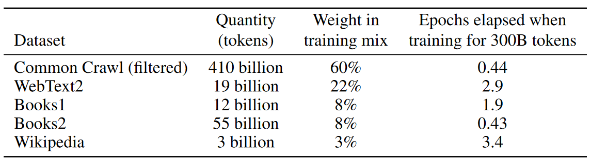
虽然Common Crawl数据已经经过处理，但作者认为质量还是比较差，在采样的时候，使用了较低的权重。
（4）模型训练
V100GPU训练
（5）模型评估
使用上下文学习评估，在每个下游任务里面，在训练集中，采样k个样本作为条件，k可以等于0或其他数值；
prompt使用：”Answer: “ or “A:“，比如二分类问题中，使用True和False，而不是0或1，因为0和1在训练过程中，出现的概率比较低。
如果回答的答案是自由的，采用Beam Search，和机器翻译类似，生成一个序列，使用Beam Search找到一个比较好的答案
3.4 实验
（1）模型大小与计算量
不同大小模型训练时与计算量的关系，x轴表示计算量，y轴表示验证损失，每根线表示一个参数的模型。黄色表示GPT-3参数最大的模型。
各个模型最好的点拉成一条线（黑色虚线），是一个power law的分布，即在最好的情况下，找到合适模型，随着计算量的指数级别的增加，损失是线性往下降的。
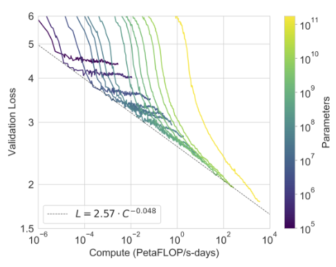
（2）不同训练方式精度
最好的Few-shot，还是与人类有差距。
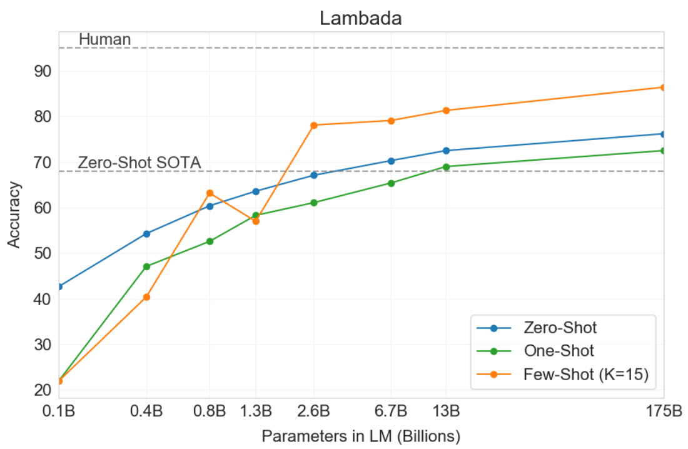
（3）开放区域QA任务
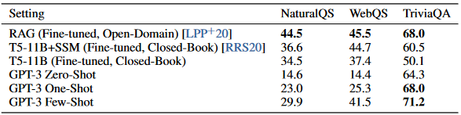
（4）机器翻译任务
实线表示：其他语言翻译到英语
虚线表示：英语翻译到其他语言
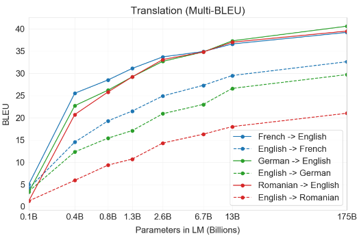
3.5 局限性
- 生成长文本依旧困难，比如写小说，可能还是会重复；
- 语言模型只能看到前面的信息；
- 语言模型只是根据前面的词均匀预测下一个词，而不知道前面哪个词权重大；
- 只有文本信息，缺乏多模态；
- 样本有效性不够；
- 模型是从头开始学习到了知识，还是只是记住了一些相似任务，这一点不明确；
- 可解释性弱，模型是怎么决策的，其中哪些权重起到决定作用都不好解释
- 负面影响：可能会生成假新闻；可能有一定的性别、地区及种族歧视。
偏见：
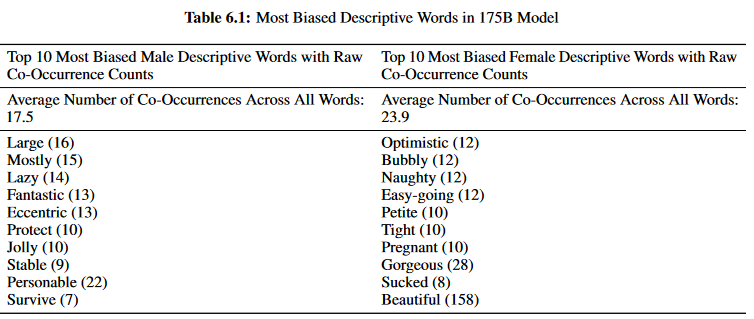
种族偏见：
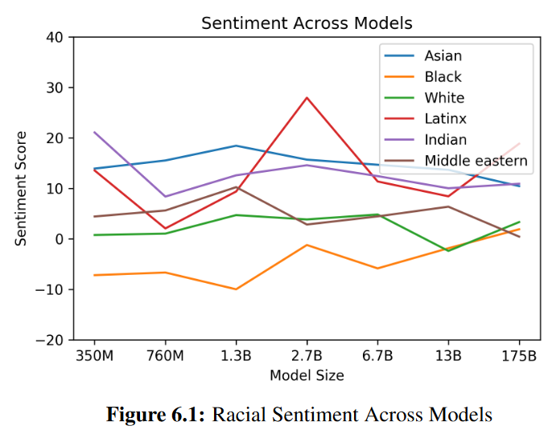
3.6 总结
1750亿参数的语言模型，在NLP的任务中，做了zero-shot, one-shot, 和few-shot 的学习，在很多任务下，它能够媲美使用更多有标记数据微调的算法；能够生成一些高质量的文本，展示了不用微调的可能性。
4.评论
GPT首先把Transformer的部分拿过来做预训练，但是在二选一时，选择了一条不太好走的路，但作者没有放弃，因为有钱有人，所以一条路走到黑。
GPT-2把模型做的更大，尝试一个更难的问题，不再下游任务上做微调；
GPT-3，如果还打不过，加钱加人，终于扳回一局。